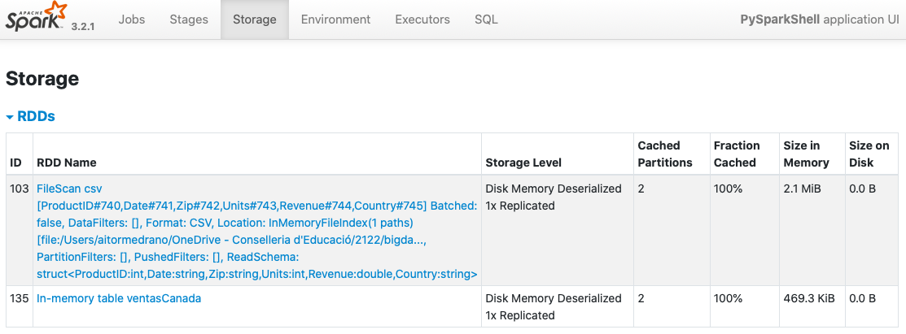
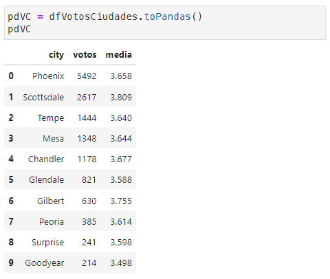
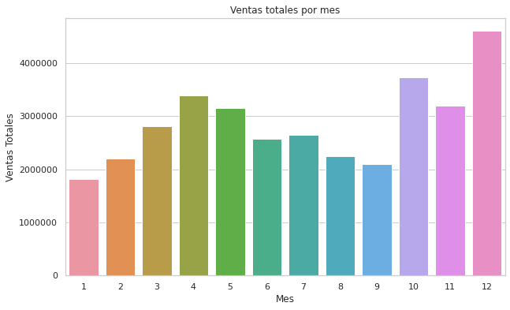
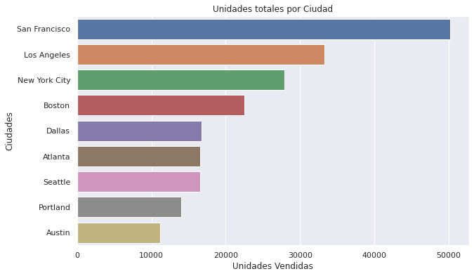
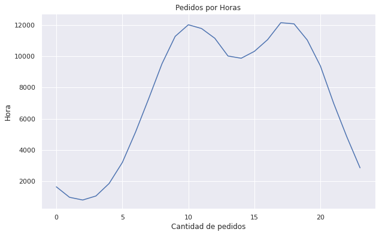

Una vez tenemos un DataFrame, podemos realizar analítica de datos sobre el dataset entero, o sobre una o más columnas y aplicar una función de agregación que permita sumar, contar o calcular la media de cualquier grupo, entre otras opciones.
Para ello, PySpark ofrece un amplio conjunto de funciones. En nuestro caso, vamos a realizar algunos ejemplos para practicar con las funciones más empleadas.
approx_count_distinct / approxCountDistinct: Devuelve aproximadamente la cantidad de elementos no nulos diferentes (puede recibir un segundo parámetro la máximo desviación estándar admitida). Este método es mucho más rápido que contar exactamente el número de resultado, y para datasets muy grandes, en ocasiones puede ser útil:
Si nos interesa obtener información estadística sobre los datos, también disponemos de las funciones skewness, kurtosis, variance, var_pop, stddev y stddev_pop.
Si agrupamos varias columnas de tipo categóricas (con una cardinalidad baja), podemos realizar cálculos sobre el resto de columnas.
Sobre un DataFrame, podemos agrupar los datos por la columna que queramos utilizando el método groupBy, el cual nos devuelve un GroupedData, sobre el que posteriormente realizar operaciones como avg(cols), count(), mean(cols), min(cols), max(cols) o sum(cols):
En ocasiones necesitamos agrupar en una colección todos los valores para un grupo en particular. Para ello, podemos usar collect_list (con repetidos) o collect_set (sin repeticiones):
Por ejemplo, para cada país, vamos a recuperar un listado con los códigos postales de aquellos pedidos que hayan superado las 5 unidades:
Las tablas pivote permite obtener un resumen de los datos a partir de columnas categóricas sobre la que realizar cálculos, tal como se hace en las hojas de cálculo con las tablas dinámicas.
Por ejemplo, vamos a obtener la cantidad recaudada por las ventas de cada año por cada pais:
Hasta ahora todo la analítica la hemos realizado sobre un único DataFrame. Aunque si seguimos un proceso ELT es probable que tengamos todos los datos en un único lugar, en ocasiones necesitamos cruzar la información de dos datasets.
Si nos basamos en el planteamiento de una base de datos relacional, para unir dos DataFrames necesitamos unir la clave ajena de uno con la clave primaria del otro.
Para estos ejemplos, vamos a cambiar de datasets y utilizar datos de vuelos de avión que han tenido algún tipo de retraso (departure_delays.csv) y otro con los códigos de los aeropuertos (airport-codes-na.tsv).
Si queremos hacer un join mediante SQL, sólo tenemos que emplear la misma sintaxis que con cualquier sistema relacional, de manera que primero crearemos las vistas temporales:
df_join=spark.sql("select v.origin, a.city from vuelos v join aeropuertos a on v.origin == a.IATA")df_join.show(3)# +------+---------+# |origin| city|# +------+---------+# | ABE|Allentown|# | ABE|Allentown|# | ABE|Allentown|# +------+---------+# only showing top 3 rows
Si quisiéramos obtener el nombre de los dos aeropuertos, necesitamos realizar dos veces el join:
df_join=spark.sql("select v.*, a.City as originCity, b.City as destinationCity from vuelos v JOIN aeropuertos a on v.origin == a.IATA join aeropuertos b on v.destination = b.IATA")df_join.show(3)# +-------+-----+--------+------+-----------+----------+---------------+# | date|delay|distance|origin|destination|originCity|destinationCity|# +-------+-----+--------+------+-----------+----------+---------------+# |1011245| 6| 602| ABE| ATL| Allentown| Atlanta|# |1020600| -8| 369| ABE| DTW| Allentown| Detroit|# |1021245| -2| 602| ABE| ATL| Allentown| Atlanta|# +-------+-----+--------+------+-----------+----------+---------------+# only showing top 3 rows
Si existiera algún vuelo cuyos códigos de aeropuerto no tuviéramos disponible en el dataset de los códigos de aeropuertos, no nos aparecería. Por tanto, sería más conveniente realizar un left join:
df_left_join=spark.sql("select v.*, a.City as originCity, b.City as destinationCity from vuelos v LEFT JOIN aeropuertos a on v.origin == a.IATA LEFT JOIN aeropuertos b on v.destination = b.IATA")df_left_join.show(3)df_left_join.count()# 1391578
Todo tipo de joins
Además de los casos vistos, podemos realizar otros tipos de joins como cross, semi, full, outer, etc... Más información en la documentación oficial
Un caso particular que conviene conocer es el left anti join. Este tipo de join permite obtener aquellos registros de la izquierda que no aparecen en la parte derecha, de manera que si seguimos con el ejemplo, podemos recuperar aquellos vuelos cuyos aeropuertos no tenemos en el dataset con los códigos:
df_left_anti_join=spark.sql("select * from vuelos v LEFT ANTI JOIN aeropuertos a ON v.origin == a.IATA ")df_left_anti_join.count()# 14416
Finalmente, como en nuestro caso teníamos dos joins, tanto para los vuelos de origen como los de destino, necesitamos volver a unir:
frompyspark.sql.functionsimportcol# le indicamos alias a los campos para eliminar ambigüedadesexpr_join2=col("a.destination")==col("b.IATA")df_joinp2=(df_joinp1.alias("a")).join((df_aeropuertos.alias("b")),expr_join2,"inner")df_joinp2.count()# 1361141
Para dominar realmente Spark, hay que tener destreza en todas las funciones existente para el tratamiento de fechas, cadenas, operaciones matemáticas, para trabajar con colecciones, etc...
Además, siempre podemos crear nuestras propias funciones de usuario para ampliar el lenguaje.
Aunque ya hemos utilizado algunas a lo largo de los apuntes, a continuación vamos a repasar las funciones más empleadas.
Otras funciones que se suelen utilizar son concat y concat_ws para unir cadenas, levenshtein para calcular la distancia entre dos cadenas, lpad y rpad para completar con espacios, etc... Si necesitas trabajar con expresiones regulares puedes utilizar regexp_extract para extraer parte de una cadena como regexp_replace para sustituir.
Para probar las funciones que trabajan con colecciones, vamos a cambiar de dataset y trabajar con uno compartido por Kaggle con datos de negocios de Yelp que tenemos almacenados en una versión reducida en yelp_academic_dataset_business.json. Los negocios tienen una propiedad denominada categories que contiene un array con las categorías de los mismos:
persons.json
{"business_id":"O_X3PGhk3Y5JWVi866qlJg","full_address":"1501 W Bell Rd\nPhoenix, AZ 85023","hours":{"Monday":{"close":"18:00","open":"11:00"},"Tuesday":{"close":"18:00","open":"11:00"},...},"open":true,"categories":["Active Life","Arts & Entertainment","Stadiums & Arenas","Horse Racing"],"city":"Phoenix",...}
El primer paso es cargar el documento y ver el esquema leído por Spark:
Recuerda que en el apartado Agrupando colecciones vimos como podemos crear colecciones al realizar una agrupación.
Así pues, además del nombre, hemos obtenido el horario de los domingos utilizando la notación . para acceder a los campos anidados, la cantidad de categorías de cada comercio, un listado ordenado con sus categorías y finalmente si es un restaurante.
Otro tipo de operación que podemos realizar es desenrollar una colección mediante la función explode y generar una fila nueva por cada elemento de la colección:
df.select("name",explode("categories")).show(10,truncate=False)# +-------------------------+--------------------+# |name |col |# +-------------------------+--------------------+# |Turf Paradise Race Course|Active Life |# |Turf Paradise Race Course|Arts & Entertainment|# |Turf Paradise Race Course|Stadiums & Arenas |# |Turf Paradise Race Course|Horse Racing |# |Sam's Club Members Only |Tires |# |Sam's Club Members Only |Automotive |# |Sam's Club Members Only |Fashion |# |Sam's Club Members Only |Shopping |# |Sam's Club Members Only |Department Stores |# |Forever 21 |Women's Clothing |# +-------------------------+--------------------+# only showing top 10 rows
Es común que se de el caso de que los datos que leemos desde un sistema externo estén en formato JSON pero que el proceso de ingesta lo haya realizado como si fuera una cadena de texto.
Supongamos que tenemos la siguiente cadena y generados un DataFrame a partir de un RDD:
tareas=["""{"dia": "Lunes", "tareas": ["Corregir ejercicios", "Ir a nadar", "Comprar pan"]}"""]# ['{"dia": "Lunes", "tareas": ["Corregir ejercicios", "Ir a nadar", "Comprar pan"]}']tareasRDD=spark.sparkContext.parallelize(tareas)tareasStrDF=tareasRDD.toDF("string")# tareasStrDF es un DF con una columna con nombre value de tipo stringtareasStrDF.printSchema()# root# |-- value: string (nullable = true)tareasStrDF.show()# +--------------------+# | value|# +--------------------+# |{"dia": "Lunes", ...|# +--------------------+
Para pasarlo a JSON, necesitamos definir un esquema con la estructura del documento JSON:
Para terminar, si necesitamos la operación inversa, y lo que queremos es crear una representación JSON de una columna, podemos utilizar la función getItem:
Además de las funciones que ofrece Spark, en cualquier momento podemos crear nuestras funciones de usuario (User-Defined Functions) para ampliar la expresividad de Spark. Antes de utilizarlas, las hemos de definir y registrar.
Si volvemos al dataset de ventas, teníamos la siguiente información:
Vamos a crear una función para que, si vende más de una unidad, se le asigne a cada producto un bonus de un 1%. Para ello, primero definiremos la función mediante Python, y posteriormente, la registraremos mediante la función udf:
Si queremos definir la función para poder utilizarla dentro de Spark SQL y obtener el mismo resultado, hemos de registrar la función mediante spark.udf.register, la cual recibe el nombre que le asignaremos a la función, el nombre de la función Python a invocar, y el tipo de dato que devuelve:
spark.udf.register("udfBonus",bonus,DoubleType())spark.sql("select ProductID, Revenue, Units, udfBonus(Units, Revenue) as bonus from ventas order by Units desc").show(5)
UDF y Python
En un principio, se desaconseja la creación de UDF mediante Python, ya que su uso penaliza de forma significativa el rendimiento.
Los ejecutores son procesos en máquinas virtuales de Java que están escritos en Java, y por ello, ejecutan código Java o Scala de forma nativa. En cambio, para Python tiene que ejecutar un proceso separado para ejecutar la UDF, lo que implica un coste extra para serializar y volver a deserializar los datos para cada fila del dataset.
Un DataFrame se puede persistir/cachear en memoria conforme necesitemos (también lo podemos hacer con los RDD). Su principal propósito es cuando vamos a acceder a un DataFrame una y otra vez y no necesitamos que se vuelvan a evaluar todas las operaciones (como pueden ser los algoritmos iterativos utilizados en Machine Learning).
Cuando persistimos un dataset, cada nodo almacena sus datos particionados en memoria y/o disco y los reutiliza en otras operaciones sobre dicho dataset.
Para ello, se emplean los métodos cache / persist y unpersist para cachear y liberar los datos.
df.persist()df.count()# forzamos la evaluación perezosa
Una vez persistidos los datos, si accedemos a http://localhost:4040 veremos en la pestaña Storage que se ha creado la tabla, su tipo de almacenamiento y particiones cacheadas:

Elementos cacheados con Spark UI
Una diferencia fundamental a la hora de persistir un DataFrame en comparación con un RDD, es que como Spark SQL conoce el esquema de los datos en el DataFrame, puede organizarlos de forma columnar y aplicar compresión sobre éstos para minimizar el espacio necesario.
Nos traemos esos datos a Pandas mediante el método .toPandas().:
pdVC=dfVotosCiudades.toPandas()
A partir de este momento pdVC es un DataFrame de Pandas:

Conversión a un DataFrame de Pandas
Y con el DataFrame de Pandas, ya podemos generar gráficos:
importpandasaspdimportmatplotlib.pyplotaspltimportseabornassnsplt.figure(figsize=(10,6))plt.ticklabel_format(useOffset=False,style="plain")sns.set_theme(style="whitegrid")sns.barplot(x="votos",y="city",data=pdVC).set_title("Votos por Ciudad")plt.xlabel("Votos emitidos")plt.ylabel("Ciudades")plt.show()
Mucho cuidado al utilizar Pandas, ya que al convertir el DataFrame nos vamos a traer todos los datos al driver, perdiendo la distribución de los datos y pudiendo provocar un error de falta de memoria.
Así pues, hay que evitar a toda costa utilizar Pandas para tratar los datos, ya que perdemos toda la potencia de trabajo en clúster (Pandas sólo puede utilizar los recursos del nodo principal). Únicamente lo utilizaremos cuando vayamos a visualizar los datos mediante Matplotlib / Seaborn como requisito de estas librerías.
Pandas y Koalas
Desde la versión 3.2 de Spark, la librería de Koalas se ha integrado en Spark, dando lugar a poder utilizar el API de Pandas directamente desde Spark, lo que facilita el aprendizaje de Spark para aquellos desarrolladores que ya dominan Pandas.
Para ello, únicamente hemos de importar la librería:
importpyspark.pandasasps
Y acceder a ps de la misma manera que usamos pd al trabajar con Pandas.
(RA5075.1 / CE5.1d y CE5.1e) En las siguientes actividades vamos a realizar agregaciones mediante el uso del API de DataFrames de Spark (cada apartado vale 0,25p).
(1p) Sobre las películas de la sesión anterior:
¿Cuantas películas diferentes hay?
¿En cuantas películas ha trabajado Murphy, Eddie (I)?
¿Cuáles son los actores que han aparecido en más de 30 películas?
¿En que película anterior a 1980 aparecen al menos 25 intérpretes?
Muestra la cantidad de películas producidas cada año (solo debe mostrar el año y la cantidad), ordenando el listado por la cantidad de forma descendente.
A partir de la consulta anterior, crea un gráfico de barras que muestre el año y la cantidad de películas, ordenados por fecha.
(1p) Nos han enviado un nuevo archivo llamado movie-ratings.tsv que contiene las calificaciones de las películas.
Crea un DataFrame que contenga los datos de ambos datasets.
Muestra para cada año, la película con mayor puntuación (año, título de la película, puntuación)
Sobre los datos anteriores, obtén también una lista con los nombres de los intérpretes.
Averigua las tres parejas de intérpretes han trabajado juntos en más ocasiones. La salida debe tener tres columnas: interprete1, interprete2 y cantidad. (necesitas utilizar un self-join)
(1.5p) Hemos recibido un dataset con las ventas de 2019 de una tienda americana de productos de tecnología, mediante un conjunto de ficheros en formato CSV comprimidos en salesdata.zip.
Una vez descomprimidos los datos, crea un DataFrame con todos los datos, infiriendo el esquema.
Vuelve a realizar la lectura de los datos pero con el siguiente esquema:
Tras la lectura, vamos a realizar la limpieza de datos. El primer paso será renombrar la columnas para eliminar los espacios en blanco.
Elimina las filas que contengan algún campo nulo.
Comprueba si las cabeceras de los archivos aparecen como datos del dataset (por ejemplo, un producto cuyo nombre sea Product). Si fuera el caso, elimina dichas filas.
A partir del campo dirección, crea dos nuevas columnas para almacenar la ciudad (City) y el estado (State). Por ejemplo, para la dirección 136 Church St, New York City, NY 10001, la ciudad es New York City y el estado es NY.
Modifica el campo con la fecha del pedido para que su formato sea timestamp.
Sobre el campo anterior, crea dos nuevas columnas, con el mes (Month) y el año (Year) del pedido.
(1.5p) Una vez realizada la transformación de los datos, vamos a realizar su carga y extraer información`, utilizando Spark SQL siempre que sea posible:
Almacena los datos en formato Parquet en la carpeta salesoutput particionando los datos por año y mes. Tras ejecutar esta operación, comprueba en disco la estructura de archivos creada.
Sobre los datos almacenados, realiza una nueva lectura pero solo leyendo los datos de 2019 los cuales deberían estar almacenados en ./salesdataoutput/Year=2019.
Averigua cual ha sido el mes que ha recaudado más. Para ello, deberás multiplicar el precio por la cantidad de unidades, y posteriormente, realizar alguna agregación. Sobre el resultado, crea un gráfico similar al siguiente:

Ventas por mes
Obtén un gráfico con las 10 ciudades que más unidades han vendido.

Ciudades con más unidades vendidas
Cantidad de pedidos por Horas en las que se ha realizado un pedido que contenía al menos dos productos:

Pedidos de al menos dos productos por horas
Listado con los productos del estado de NY que se han comprado a la vez, obteniendo un resultado similar a: